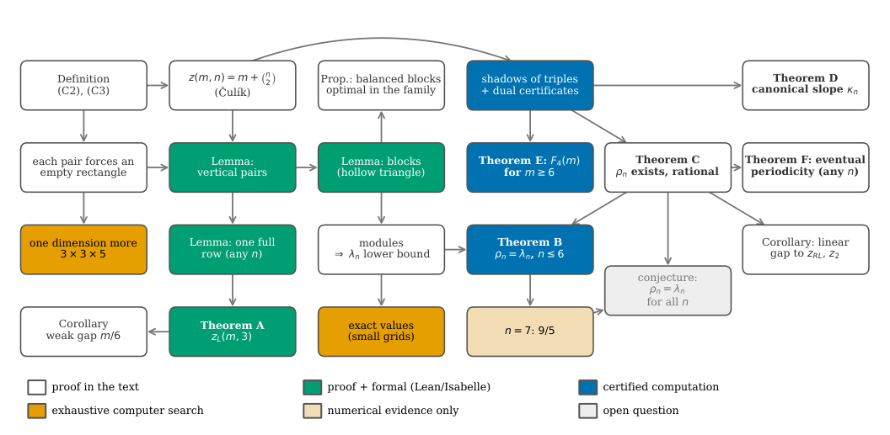
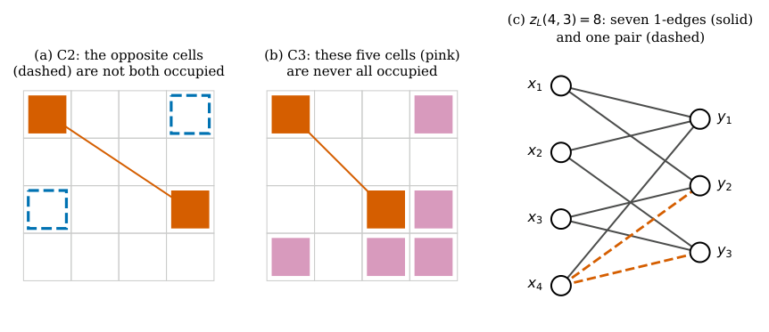
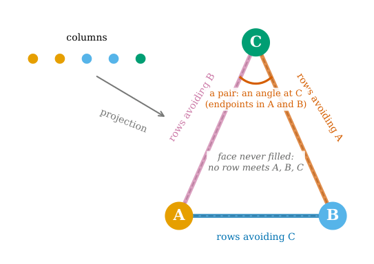
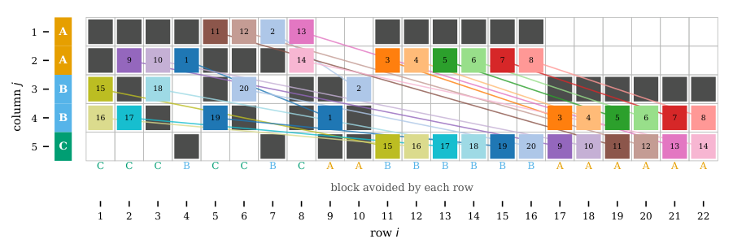
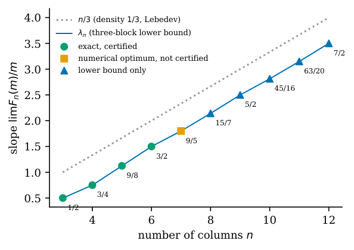
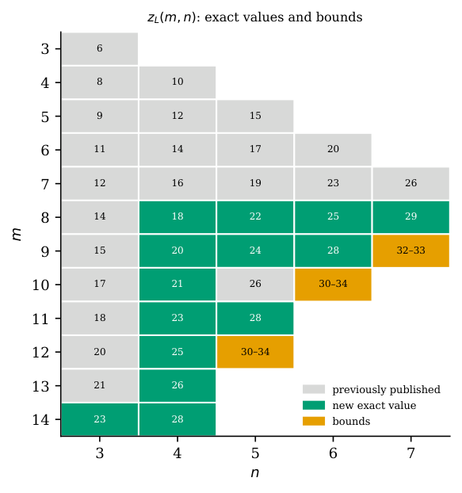
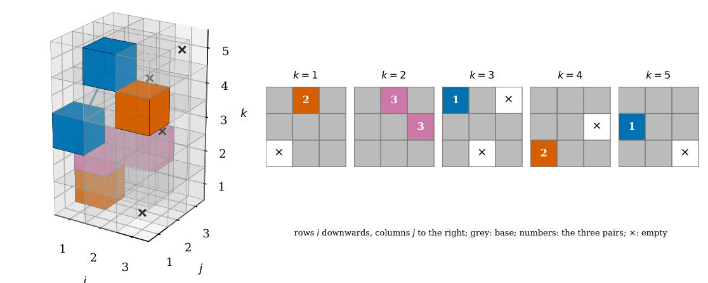

Why three blocks? The limited augmented Zarankiewicz number in fixed width
At a glance
What the paper contributes
The limited augmented Zarankiewicz number $z_L(m,n)$ of Qi, Cui and Xu is a lower bound for the largest sum-of-squares rank of $m\times n$ biquadratic forms. The paper follows one question: with the number $n$ of columns fixed, how many pairs does each new row buy?
- Three columns, exactly: $z_L(m,3)=\lfloor 3m/2\rfloor+2$ for every $m\ge3$ (Theorem A), answering the question of Qi, Löfberg and Chen; proof formalized in Lean. The gap to their weak variant grows like $m/6$.
- Every width: $F_n(m)=z_L(m,n)-z(m,n)=\rho_n m+O_n(1)$ with $\rho_n$ rational, the optimum of finitely many linear programs (Theorem C), and the error is eventually periodic (Theorem F).
- Pairs around a hollow triangle of three column blocks give $\rho_n\ge\lambda_n=n/3-1/2+O(1/n)$; balanced blocks are optimal inside that family (Proposition 6.3), and $\rho_n=\lambda_n$ for $n\le6$ by rational dual certificates checked in exact arithmetic (Theorem B). Equality for every $n$ is a conjecture.
- Consequences and companions: a linear gap to the recursive-line, signed and second-order numbers in every width (Corollary 6.2); the slope $\lfloor(n-1)^2/4\rfloor/(n-1)$ of Lebedev's canonical base for every $n$ (Theorem D); $z_L(m,4)$ for every $m\ge6$ by certified computation (Theorem E); fourteen new exact values; and a three-dimensional analogue where the naive bound of one quarter already fails in $3\times3\times5$ (Proposition 8.1).
The admissibility lemmas behind the constructions are formalized in Isabelle/HOL (submitted to the Archive of Formal Proofs). Version 1 on Zenodo: doi:10.5281/zenodo.23778502.
🚀 Start here: Theorem A: three columns: z_L(m,3) = ⌊3m/2⌋ + 2 for every m ≥ 3.
Main results:
- Theorem A: three columns: z_L(m,3) = ⌊3m/2⌋ + 2 for every m ≥ 3
- Theorem B: the three-block slope λₙ is always reachable, and exact for n ≤ 6
- Theorem C: the slope ρₙ exists for every n and is rational
- Theorem D: the canonical base has slope ⌊(n−1)²/4⌋/(n−1) for every n
- Theorem E: four columns for every m ≥ 6: two linear branches crossing at m = 24
- Theorem F: Fₙ(m) − ρₙ m is eventually periodic for every n
🗺️ Map of the results (click a box to go to it)
Dependencies in the written proof: an arrow A → B means that this proof of B uses A. Every result rests on its written proof; the tags record what was checked besides, and each statement's “Evidence & scope” block says how far. The colour of a box is its strongest tag, in the order above; the tags in the box give the rest. Boxes with a thick border are the main results; click a box to read the statement.
📐 Setting (copied from the paper, §§1–3, 5, 6)
Write \(z(m,n)\) for the maximum number of ones; when \(m\ge \binom n2\) it is
attained by one row for each pair of columns and single ones in all other rows; every extremal matrix has this form. (§1)
Definition 2.1 [ 26 , Def. 2.1 ] . Let \(E_1\) be a \(C_4\)-free set of cells with \(|E_1|=z(m,n)\), and let \(E_2\) be a family of unordered pairs of distinct cells outside \(E_1\), no cell in two pairs; put \(O=E_1\cup \bigcup E_2\). The family is admissible if every pair \(\{ (i,j),(p,q)\} \) satisfies
if \(i\ne p\) and \(j\ne q\), the opposite cells \((i,q),(p,j)\) are not both in \(O\);
no cell \((k,\ell )\) with \(k\notin \{ i,p\} \), \(\ell \notin \{ j,q\} \) has \((k,\ell ),(k,j),(k,q),(i,\ell ),(p,\ell )\in O\).
The limited augmented Zarankiewicz number \(z_L(m,n)\) is the maximum of \(|E_1|+|E_2|\). (§2)
For a pair, let \(B\) be the set of rows other than \(i,p\) occupied in both columns \(j,q\), and \(C\) the set of columns other than \(j,q\) occupied in both rows \(i,p\); then (C3) \(\iff \) the rectangle \(B\times C\) is completely empty. (§2)
If \(n\) is fixed and \(m\) grows, how many pairs does each new row buy? Put \(F_n(m)=z_L(m,n)-z(m,n)\). (§3)
For \(m\ge 3\) a maximum base consists of the rows \(\{ 1,2\} ,\{ 1,3\} ,\{ 2,3\} \) and \(m-3\) rows with a single one. For a row \(r\) let \(S_r\) be its occupied support; the cells of \(S_r\) outside \(E_1\) are its endpoints, and \(2|E_2|\) is the number of endpoints. (§5) “Rows \(1\)–\(10\) are the special rows (two grey cells each) and rows \(11\)–\(22\) singleton rows” (§4, caption of Figure 4).
Each row keeps its original support as a label … the shadow \(\mathcal H\), the set of triples of columns contained in some frequent support. (§6.2)
1 A question about zeros and ones
No numbered statement in this section.
Its figures and tables are below; its text is in the paper (PDF).
🖼️ Figure 1

A map of the paper. Each box is a statement and an arrow means “is used in”. The colour says what the statement rests on: a proof in the text; a proof also formalized (Theorem A in Lean; the vertical-pair, full-row and blocks lemmas in Isabelle/HOL, see Formalizations at the end); a computation certified in exact arithmetic; an exhaustive computer search; numerical evidence only; or an open question. Theorems A–F are in bold.
2 From cells to squares
Let \(E_1\) be a \(C_4\)-free set of cells with \(|E_1|=z(m,n)\), and let \(E_2\) be a family of unordered pairs of distinct cells outside \(E_1\), no cell in two pairs; put \(O=E_1\cup \bigcup E_2\). The family is admissible if every pair \(\{ (i,j),(p,q)\} \) satisfies
if \(i\ne p\) and \(j\ne q\), the opposite cells \((i,q),(p,j)\) are not both in \(O\);
no cell \((k,\ell )\) with \(k\notin \{ i,p\} \), \(\ell \notin \{ j,q\} \) has \((k,\ell ),(k,j),(k,q),(i,\ell ),(p,\ell )\in O\).
The limited augmented Zarankiewicz number \(z_L(m,n)\) is the maximum of \(|E_1|+|E_2|\).
↳ Used in: Lemma 4.1, Lemma 5.1, Proposition 8.1
🧪 Lab: Figure 2 live: Definition 2.1 on your own grid
Write a base (one row per word, its occupied columns as digits) and some pairs (row,column-row,column; separated by «;»). The lab checks (C2) and (C3) literally, cell by cell, rings any witness in red, tells whether the base is maximum, and gives the distance of each pair in the graph \(R_O\) (a pair is admissible exactly when its two cells are at distance at least 3). In 3D: the cells on the floor, the rectangles of \(R_O\) as low arches, each pair as a tall dashed arch.
🖼️ Figure 2

The definition at a glance. (a) Condition (C2): for the pair (orange), the two opposite cells (dashed) are not both occupied. (b) Condition (C3): with the pair in orange, the five pink cells, lying in one further row \(k\) and one further column \(\ell \), are never all occupied. (c) The case \(4\times 3\) as a bipartite graph, as in [ 25 ] : rows \(x_i\), columns \(y_j\); the seven cells of a maximum base (rows \(\{ 1,2\} ,\{ 1,3\} ,\{ 2,3\} ,\{ 1\} \)) as solid edges and the single pair, which fills row \(4\), as two dashed edges; so \(z_L(4,3)=8\).
3 The question in fixed width
For every \(m\ge 3\),
and every maximum base admits at most \(\lfloor (m-2)/2\rfloor \) pairs. The proof is formalized in Lean 4.
✅ Checked when this page was built: LimitedAugmentedThree.lean compiles with Lean 4.35.0, no errors, no sorry. Axioms — zL_three, zL_le, card_E2_le, no_two_full, z_three, exists_good, exists_odd, exists_even: propext, Classical.choice, Quot.sound.
Reproduce: Lean 4.35.0, Mathlib f0b4c8150aa0; in that Lean project, lake env lean LimitedAugmentedThree.lean (SHA-256 of the compiled file: b3a1168f55b462ae…; a source page on this site may show it with comments edited, under its own hash).
🆕 Classical and new: the paper: «previously known for m ≤ 13» (Card A), posed for all m as an open problem in [QLC, §9]; it also settles the second half of that problem (the gap to the weak number grows like m/6).
↳ Used in: 1
A row that is not full has at least one empty cell, so a singleton row carries at most one endpoint and a special row none, except the single full row of Lemma 5.2, which carries at most two. Hence \(2|E_2|\le (m-3)+1=m-2\) for every maximum base. Equality is reached: for \(m\) odd pair the singleton rows (all with their one in column \(1\)) two by two as \(\{ (r,2),(r',3)\} \). For \(m\) even take one singleton row \(t\) with its one in column \(2\) and the pair \(\{ (s,1),(t,3)\} \), where \(s\) is the special row \(\{ 2,3\} \), which becomes the full row; split the other \(m-4\) singleton rows evenly between ones in columns \(1\) and \(2\), and join them by vertical pairs in column \(3\). For a vertical pair \(C\) is empty; for the other pairs \(B\times C\) lies in column \(1\) (odd case) or column \(2\) (the last pair), where every row of \(B\) is empty, and (C2) holds because at least one opposite cell is free; so the families are admissible.
💡 In plain words (commentary, not part of the paper)
Take a \(0/1\) matrix with three columns and \(m\) rows. First place as many ones as possible with no four of them at the corners of a rectangle: that is \(m+3\) ones (one row for each pair of columns, a single one in every other row). Then add pairs of extra cells, each pair obeying the two local rules (C2) and (C3). The theorem says that exactly \(\lfloor (m-2)/2\rfloor \) pairs fit, so each new row buys half a pair.
Why: two rows that both fill all three columns always create a forbidden pattern, so at most one row is full (Lemma 5.2); every other row keeps an empty cell, and a row with a single one of the base then carries at most one endpoint of a pair. That caps the endpoints at \(m-2\). Explicit families reach the cap, for \(m\) odd and for \(m\) even.
The paper reports the value as previously known only for \(m\le 13\), by exhaustive search [ 28 , § 9 ] , where it is posed as an open problem; the whole proof, upper bound for every maximum base and the families, is checked by Lean (module LimitedAugmentedThree).
🛡️ Evidence & scope
Lean: the definitions of §2 and the whole proof, upper bound for every maximum base and both families; standard axioms only. Formalizations.Combinatorics.Zarankiewicz.LimitedAugmentedThree (commit 389a576)
Program: the values for m ≤ 14 by exhaustive search (nauty classes + CP-SAT), equal to the formula. supplement: zl_nauty.py, zl_cpsat_dlex.py (output: table_zL.json)
Program: the three language tabs: F₃(m) = ⌊(m−2)/2⌋ for m = 3..7 by an exhaustive search of this blueprint, the closed form for m ≤ 10 000, the base and pair of Figure 2(c), the rectangle identity in exact arithmetic; each with a control that must fail (29-oct: passes). lab/comprueba_pestanas.py
🔤 Read this theorem in another mathematical language
Commentary, not part of the paper. An \(m\times 3\) matrix of zeros and ones with no four ones at the corners of a rectangle has at most \(m+3\) ones. Start from such a matrix and add pairs of further ones, each pair obeying (C2) and (C3). Exactly \(\lfloor (m-2)/2\rfloor \) pairs fit, whatever the starting matrix: \(0,1,1,2,2\) for \(m=3,\dots ,7\) (each new row buys half a pair), and the total is \(z_L(m,3)=\lfloor 3m/2\rfloor +2\).
Commentary, not part of the paper. Rows are vertices \(x_1,\dots ,x_m\), columns are \(y_1,y_2,y_3\), a one is an edge \(x_iy_j\). The base is a bipartite graph with no \(4\)-cycle, \(m+3\) edges. For \(m=4\) (Figure 2(c)) the base has the seven edges of the rows \(\{ 1,2\} ,\{ 1,3\} ,\{ 2,3\} ,\{ 1\} \), and one pair of new edges, \(x_4y_2\) and \(x_4y_3\), fills \(x_4\); a second full vertex would always create a forbidden pattern. In general at most one row vertex reaches all three columns.
Commentary, not part of the paper. Write a cell as the monomial \(x_iy_j\). A rectangle must be avoided because its four squares are only two: \(x_i^2y_j^2+x_i^2y_q^2+x_p^2y_j^2+x_p^2y_q^2=(x_iy_j+x_py_q)^2+(x_iy_q-x_py_j)^2\). Through the chain \(\mathrm{BSR}(m,n)\ge z_A(m,n)\ge z_L(m,n)\) of Section 2, Theorem A gives a lower bound \(\lfloor 3m/2\rfloor +2\) for the largest number of squares a sum-of-squares biquadratic form in \(x\in \mathbb R^m\), \(y\in \mathbb R^3\) can need.
For every \(n\ge 3\), \(\liminf _{m\to \infty }F_n(m)/m\ge \lambda _n\), where
and \(\lim _{m\to \infty }F_n(m)/m=\lambda _n\) for \(3\le n\le 6\): the slopes are \(1/2\), \(3/4\), \(9/8\) and \(3/2\).
Lean · none foundshow
Searched 29-oct-2026 with existe-ya (our Lean, Mathlib, Loogle, LeanSearch, Isabelle/AFP, GitHub, the clones atlas-lean, TauCeti, openai-math, and Rocq/HOL Light/Metamath): not found in any formal library.🆕 Classical and new: lower bound: a fixed-width formulation of Lebedev’s construction [Leb, Thms. 4, 13]; the exact slopes 1/2, 3/4, 9/8, 3/2 for n ≤ 6 are the paper’s.
↳ Used in: Theorem C
💡 In plain words (commentary, not part of the paper)
With \(n\) columns fixed, the number of pairs grows linearly in the number of rows. The theorem gives a slope \(\lambda _n\), about \(n/3-1/2\), that is always reachable, and says that for \(n=3,4,5,6\) nothing does better: the slopes are exactly \(1/2\), \(3/4\), \(9/8\) and \(3/2\).
Why: the lower bound comes from modules, blocks of rows built around a hollow triangle of three column blocks (Lemma 4.1), repeated as often as needed. The upper bound comes from a linear program attached to each “shadow” (the triples of columns that occur in many rows); a rational dual solution of each program is a certificate, and for \(n\le 6\) every certificate has value at most \(\lambda _n\) (Proposition 6.1).
The constructions follow Lebedev’s three-block construction [ 24 , Thms. 4, 13 ] , adapted to column blocks of any sizes in fixed width; the exact slopes for \(n\le 6\) are the paper’s. For \(n=7\) a mixed integer program returns the numerical value \(1.8\), compatible with \(9/5=\lambda _7\) but not certified.
🛡️ Evidence & scope
Program: every module rebuilt for n = 3,…,12 and checked by two independent admissibility checkers. supplement: lambda_modules.json, modulos_lambda.py
Program: n = 7: a mixed integer program over the shadow returns 1.8 (floating point), compatible with 9/5 = λ₇; not a certificate. supplement: zl_sombras_mip.py
4 Why three blocks?
Partition the columns into blocks, give every row of the grid a type \(T\) of at most two blocks with its occupied support inside \(\bigcup _{x\in T}B_x\), and let every pair join an endpoint of a row of type \(T\) in a block \(x\in T\setminus T'\) to an endpoint of a row of type \(T'\) in a block \(y\in T'\setminus T\). Then the pairs are admissible.
Isabelle · oursshow
blocks_admissible · Isabelle/AFP/Limited_Augmented_Zarankiewicz/ZL_Labels.thy, line 89 — the lemma
lemma blocks_admissible:
assumes typ2: "\<And>r. card (typ r) \<le> 2" and fin: "\<And>r. finite (typ r)"
and inside: "\<And>r j. j \<in> supp Oc r \<Longrightarrow> blk j \<in> typ r"
and rows: "fst c \<noteq> fst d"
and x: "blk (snd c) \<in> typ (fst c) - typ (fst d)"
and y: "blk (snd d) \<in> typ (fst d) - typ (fst c)"
shows "C2 Oc c d \<and> C3 Oc c d"label_admissible · Isabelle/AFP/Limited_Augmented_Zarankiewicz/ZL_Labels.thy, line 35 — the general label lemma of §6.3, of which it is the special case of labels made of two blocks
lemma label_admissible:
assumes lab: "\<And>r. supp Oc r \<subseteq> lab r"
and tri: "\<And>k a b e. a \<in> supp Oc k \<Longrightarrow> b \<in> supp Oc k \<Longrightarrow> e \<in> supp Oc k \<Longrightarrow>
a \<noteq> b \<Longrightarrow> a \<noteq> e \<Longrightarrow> b \<noteq> e \<Longrightarrow> {a, b, e} \<in> H"
and rows: "fst c \<noteq> fst d"
and vert: "snd c = snd d \<Longrightarrow> lab (fst c) \<inter> lab (fst d) = {snd c}"
and diag2: "snd c \<noteq> snd d \<Longrightarrow> snd d \<notin> lab (fst c) \<or> snd c \<notin> lab (fst d)"
and diag3: "snd c \<noteq> snd d \<Longrightarrow> \<forall>l \<in> lab (fst c) \<inter> lab (fst d) - {snd c, snd d}. {snd c, snd d, l} \<notin> H"
shows "C2 Oc c d \<and> C3 Oc c d"🆕 Classical and new: the paper: «a formulation of Lebedev’s construction [Leb, Thms. 4, 13] in the form that fixed width requires».
↳ Used in: Theorem B, Theorem C, Proposition 6.3, 1, 4
The opposite cells lie in block \(y\) of the first row and block \(x\) of the second, which these rows avoid: (C2). A column common to both rows lies in a block \(z\in T\cap T'\) distinct from \(x,y\), so a (C3) witness row would meet three blocks.
💡 In plain words (commentary, not part of the paper)
Split the columns into blocks and let every row live inside one or two blocks. Pair a cell of one row with a cell of another row only if each cell lies in a block the other row does not use. Then every such pair is admissible.
Why: the two opposite cells of the pair fall in blocks that their rows avoid, so they are empty, which is (C2); a column shared by the two rows lies in a third block, so a witness row for (C3) would have to touch three blocks, which no row does. With three blocks, the rows are the sides of a triangle and each pair is an angle around its empty face; the paper compares this with Turán’s complete tripartite graph.
The paper presents the lemma as a formulation of Lebedev’s construction [ 24 , Thms. 4, 13 ] in the form fixed width requires. It is formalized in Isabelle/HOL (blocks_admissible), as a special case of the general label lemma (label_admissible).
🧪 Lab: Figures 3 and 4 live: build your own hollow triangle
Choose the number of columns \(n\) and, if you like, the sizes \(x\ge y\ge z\) of the three blocks (leave them at 0 for the balanced split). The lab builds the module of Proposition 6.3 for those sizes, adds the \(\binom n2\) special rows, checks every pair against (C2) and (C3) in your browser, and reports \(P/R=M(x,y,z)\) against \(\lambda _n\). The template and the grid replace Figures 3 and 4. In 3D the pairs are arches over the grid, coloured by the corner of the triangle where their angle sits; the slider stacks modules, and the ratio of pairs to rows climbs to the slope. Write «paper» as source for the 22 × 5 configuration of Figure 4 itself.
🖼️ Figure 3

The mechanism behind the three-block constructions. Left: the columns are projected onto three blocks \(A,B,C\); a row occupying two blocks is a side of the triangle, a pair is an angle (an endpoint in \(A\) on a row of type \(AC\) and one in \(B\) on a row of type \(BC\), meeting at \(C\)), and no row fills the face, which is why (C3) never fires. Right: the same template in fixed width, rows grouped by type and columns by block; each type leaves one block empty, and a pair runs along a channel between two types through their common block (Lemma 4.1).
🖼️ Figure 4

A three-block configuration on \(22\times 5\), drawn transposed (rows of the grid run horizontally). Blocks \(A=\{ 1,2\} \), \(B=\{ 3,4\} \), \(C=\{ 5\} \), the balanced sizes for \(n=5\). Rows \(1\)–\(10\) are the special rows (two grey cells each) and rows \(11\)–\(22\) singleton rows; the letter under each row is the block it avoids. The \(32\) cells of \(E_1\) are grey and the \(20\) pairs are numbered in their two cells (\(16\) endpoints lie in special rows, \(24\) in singleton rows). There are \(110-32=78\) free cells and \(20/78{\gt}1/4\) pairs per free cell; the \(40\) endpoints occupy more than half of the free cells. Data in witness_22x5_three_blocks.json, checked by both admissibility checkers.
5 Three columns
If \(m\ge \binom n2\) and \(\{ (i,j),(p,j)\} \in E_2\), then \(S_i\cap S_p=\{ j\} \).
Isabelle · oursshow
vertical_pair · Isabelle/AFP/Limited_Augmented_Zarankiewicz/ZL_Labels.thy, line 189 — the lemma, in a locale whose hypotheses are the properties of a maximum base used in the text
lemma vertical_pair:
assumes "((i, j), (p, j)) \<in> P"
shows "supp Occ i \<inter> supp Occ p \<inter> {..<n} = {j}"↳ Used in: Theorem A, Lemma 5.2, Theorem D
If \(\ell \ne j\) lies in both supports, the row \(k\) of \(E_1\) through the pair of columns \(\{ j,\ell \} \) is distinct from \(i,p\) (its cell in column \(j\) is in \(E_1\), theirs are not) and gives the forbidden cells \((k,\ell ),(k,j),(i,\ell ),(p,\ell )\) of (C3).
💡 In plain words (commentary, not part of the paper)
A vertical pair joins two cells of the same column. When the base is maximum, the two rows of such a pair can share no other column.
Why: if they shared a second column \(\ell \), the row of the base that covers the pair of columns \(\{ j,\ell \} \) (a maximum base has one for every pair of columns) would complete the five cells forbidden by (C3).
This is the first of the two observations behind Theorem A; it holds for every \(n\). It is formalized in Isabelle/HOL (vertical_pair), inside a locale whose hypotheses are the properties of a maximum base used in the text.
If \(n\ge 3\) and \(m\ge \binom n2\), at most one row is completely occupied.
Isabelle · oursshow
at_most_one_full_row · Isabelle/AFP/Limited_Augmented_Zarankiewicz/ZL_Labels.thy, line 328 — the lemma
lemma at_most_one_full_row: assumes "full F" and "full G" shows "F = G"
endpoint_bound · Isabelle/AFP/Limited_Augmented_Zarankiewicz/ZL_Counts.thy, line 64 — its consequence 2F_n(m) ≤ (n−2)m − C(n,2) + 1
theorem endpoint_bound: "card (Occ - E1) + n * (n - 1) div 2 \<le> (n - 2) * m + 1"
↳ Used in: Theorem A, Corollary 6.2, Theorem E, 3
Let \(F\ne G\) be full. No row of the base has more than two cells, so \(F\) has an endpoint \((F,j)\). A partner \((F,q)\) in the same row is excluded by \(G\) and any third column via (C3). A partner \((P,j)\) in the same column contradicts Lemma 5.1, since \(S_P\) contains the \(E_1\)-cell of \(P\), outside column \(j\). A partner \((P,q)\) with \(P\ne F\), \(q\ne j\) forces \((P,j)\notin O\) by (C2), as \((F,q)\in O\); so \(P\) is not full, \(P\ne G\), an \(E_1\)-cell of \(P\) lies in a column \(\ell \notin \{ j,q\} \), and \((G,\ell ),(G,j),(G,q),(F,\ell ),(P,\ell )\in O\) violates (C3).
💡 In plain words (commentary, not part of the paper)
In the regime \(m\ge \binom n2\), at most one row can be completely occupied.
Why: if two rows \(F\) and \(G\) were full, \(F\) has an endpoint, and its partner can be in the same row, in the same column, or elsewhere. In the same row, \(G\) and a third column give a (C3) witness; in the same column, Lemma 5.1 is violated; and elsewhere, (C2) forces an empty cell in the partner’s row and then \(G\) completes a (C3) witness.
Consequently every other row keeps a hole, which gives the bound \(2F_n(m)\le (n-2)m-\binom n2+1\); for \(n=3\) it is the exact bound of Theorem A. Lemma and bound are formalized in Isabelle/HOL (at_most_one_full_row, endpoint_bound).
6 Slopes in fixed width
For \(n=3,4,5,6\) the shadows form \(2\), \(5\), \(34\) and \(2136\) orbits under column permutations, and each orbit has a rational dual certificate of value at most \(\lambda _n\); an independent checker in exact arithmetic verifies \(33\), \(501\), \(14\, 316\) and \(2\, 892\, 596\) inequalities.
Lean · none foundshow
Searched 29-oct-2026 with existe-ya (our Lean, Mathlib, Loogle, LeanSearch, Isabelle/AFP, GitHub, the clones atlas-lean, TauCeti, openai-math, and Rocq/HOL Light/Metamath): not found in any formal library; certified by rational duals checked in exact arithmetic, not formalized.↳ Used in: Theorem B, Theorem C
💡 In plain words (commentary, not part of the paper)
For \(n=3,4,5,6\) the shadows fall into \(2\), \(5\), \(34\) and \(2136\) classes under permuting the columns. For each class there is a dual solution with rational weights whose value is at most \(\lambda _n\), and an independent program in exact arithmetic checks all of them: \(33\), \(501\), \(14\, 316\) and \(2\, 892\, 596\) inequalities.
What a certificate is: weights on the ports (a support and one of its columns) such that every permitted pair of ports carries weight at least \(1\) and every row carries at most \(\Lambda \); summing over rows bounds the number of pairs by \(\Lambda m+O(1)\). For \(n=4\) the paper writes the one certificate that reaches \(3/4\) explicitly.
These certificates are the upper half of Theorem B. All numbers are the paper’s; the certificates and the checker are the files shadow_certificate_n3..6.json and cert_sombras_check.py.
🛡️ Evidence & scope
Program: 2, 5, 34 and 2136 orbits; the independent checker verifies 33, 501, 14 316 and 2 892 596 inequalities in exact arithmetic. supplement: shadow_certificate_n3..6.json, zl_cert_sombras.py, cert_sombras_check.py
For every \(n\ge 3\) let \(\rho _n\) be the largest value of the shadow programs over all shadows \(\mathcal H\). Then \(\rho _n\) is rational and
Moreover \(\rho _n\ge \lambda _n\), with equality for \(n\le 6\).
Lean · none foundshow
Searched 29-oct-2026 with existe-ya (our Lean, Mathlib, Loogle, LeanSearch, Isabelle/AFP, GitHub, the clones atlas-lean, TauCeti, openai-math, and Rocq/HOL Light/Metamath): not found in any formal library.↳ Used in: Corollary 6.2, Theorem D, Theorem E, Theorem F, 1, 3, 6
The upper bound \(F_n(m)\le \rho _nm+O_n(1)\) is the reduction above. For the lower bound take an optimal shadow and a rational optimal solution of its program, with \(\sum x_{S,a}=1\), and multiply by a common denominator \(D\): this gives integers \(X_{S,a}\) (rows with label \(S\) and \(E_1\)-cell in column \(a\)) and \(Y_e\) (pairs on each permitted pair \(e\) of ports). Build these rows as singleton rows; at the port \((S,j)\) choose as many rows of label \(S\) with \(a\ne j\) as the port needs, which the capacities allow, put an endpoint in column \(j\) of each, and join the endpoints along the pairs \(e\). A row’s real support is contained in its label. Two ports of the same label are never permitted, so the two cells of a pair lie in different rows. (C2) holds because supports only shrink. A vertical pair has \(S\cap T=\{ j\} \), so no column for a (C3) witness. For a diagonal pair, a witness row would contain three columns \(j,q,\ell \) with \(\ell \in (S\cap T)\setminus \{ j,q\} \); the special rows are built with their two base cells only, so the witness is a labelled row, whose label puts \(\{ j,q,\ell \} \) in \(\mathcal H\), which the permitted pairs exclude. The same argument applies to any number of copies of this module together with the \(\binom n2\) special rows and filler singleton rows, so \(F_n(m)\ge \rho _nD\lfloor (m-\binom n2)/D\rfloor \). There are finitely many programs, all with rational data, so \(\rho _n\) is rational. The modules of Section 6.1 give \(\rho _n\ge \lambda _n\), and Proposition 6.1 gives equality for \(n\le 6\).
💡 In plain words (commentary, not part of the paper)
For every number of columns the slope exists: \(F_n(m)=\rho _n m+O_n(1)\), where \(\rho _n\) is the best value of finitely many linear programs with rational data, so a rational number, and at least \(\lambda _n\).
Why: the upper bound is the reduction to the shadow programs (Theorem B’s proof). For the lower bound, an optimal rational solution is scaled to integers and built row by row: each row gets the support its label allows and endpoints at its ports, and the pairs follow the flows. The general label lemma shows that every pair built this way is admissible. Repeating this module, plus the special rows, gives \(\rho _n m-O(1)\) pairs.
The paper checks the realization by machine for \(n=3,4,5,6\) (configurations \(7\times 3\), \(14\times 4\), \(26\times 5\), \(31\times 6\) with exactly \(\rho _n\) pairs per labelled row). So whether \(\rho _n=\lambda _n\) for every \(n\) (Question 1) is a question about one explicit finite family of linear programs.
🛡️ Evidence & scope
Program: the realization of the optimal shadow program for n = 3,4,5,6: configurations 7×3, 14×4, 26×5, 31×6 with exactly ρ_n pairs per labelled row, admissible under both checkers. supplement: zl_rho_realiza.py
For every fixed \(n\ge 3\) and \(X\in \{ RL,SL,2\} \),
Lean · none foundshow
Searched 29-oct-2026 with existe-ya (our Lean, Mathlib, Loogle, LeanSearch, Isabelle/AFP, GitHub, the clones atlas-lean, TauCeti, openai-math, and Rocq/HOL Light/Metamath): not found in any formal library.🆕 Classical and new: combines Lebedev’s asymptotics of the relaxed numbers [LebII, Thm. 1.2] with Theorem C.
↳ Used in: 1
💡 In plain words (commentary, not part of the paper)
Qi and coauthors also studied relaxed versions of the irreducibility test behind \(z_L\): the recursive-line, signed and second-order numbers. Lebedev proved that all three grow like \(\frac{n+1}2m\) in fixed width [ 15 , Thm. 1.2 ] . Together with Theorem C this says that the original number stays linearly below them in every width: the gap has slope \(\frac{n-1}2-\rho _n\), at least \(\frac12\).
Why at least \(\frac12\): Lemma 5.2 gives \(\rho _n\le (n-2)/2\). For \(n=3,4,5,6\) the gap slopes are \(1/2\), \(3/4\), \(7/8\) and \(1\), from the certified \(\rho _n\).
The relaxed numbers’ asymptotics are Lebedev’s; the corollary is the paper’s combination of it with Theorem C.
If \(z(x-1)\ge y(y-1)\), then \(M=\frac{(s-1)((x-1)s+yz)}{s(n-2)}\) with \(s=y+z\); otherwise \(M=\frac{(u+1)(zu+(x-1)(y-1))}{u(n-1)}\) with \(u=x+y-2\). In the first case
and in the second case
(On the boundary \(z(x-1)=y(y-1)\) the two formulas agree wherever both are defined; for \(x=y=z=1\) only the first is defined, and it gives \(M=1/2\).) Consequently \(\max _{x+y+z=n}M=\lambda _n\), attained only by the sizes \((k,k,k)\), \((k+1,k,k)\) and \((k+1,k+1,k)\) according as \(n=3k\), \(3k+1\), \(3k+2\).
Lean · none foundshow
Searched 29-oct-2026 with existe-ya (our Lean, Mathlib, Loogle, LeanSearch, Isabelle/AFP, GitHub, the clones atlas-lean, TauCeti, openai-math, and Rocq/HOL Light/Metamath): not found in any formal library; the closest is Lebedev's Lean companion of arXiv:2609.16555 (CleanHolePairCounting.lean, reciprocal_block_charge), a charging lemma for reciprocal pairs between three classes inside his density argument, not this optimization over the block sizes.↳ Used in: 1
Lower bound: modules in which every row fills its two blocks and pairs are matched along the three channels of Lemma 4.1. In the first case take \(z(s-1)\) rows of type \(AB\) and \(y(s-1)\) of type \(AC\) anchored in \(A\), and \((x-1)y\), \((x-1)z\) rows of type \(BC\) anchored in \(B\), \(C\); the channels then carry \(yz(s-1)\), \((x-1)z(s-1)\) and \((x-1)y(s-1)\) pairs, so \(R=s(n-2)\) and \(P=(s-1)((x-1)s+yz)\). In the second case take \(z(y-1)\) and \(z(x-1)\) rows of type \(AB\) anchored in \(A\) and \(B\), \((y-1)(u+1)\) of type \(AC\) anchored in \(A\), and \((x-1)(u+1)\) of type \(BC\) anchored in \(B\); the channels carry \(z(x-1)(u+1)\), \(z(y-1)(u+1)\) and \((x-1)(y-1)(u+1)\) pairs, so \(R=u(n-1)\) and \(P=(u+1)(zu+(x-1)(y-1))\). Upper bound: weights on endpoint cells by row type and block, \((AB,A)\mapsto p\), \((AB,B)\mapsto q\), \((AC,A)\mapsto r\), \((AC,C)\mapsto 1-q\), \((BC,B)\mapsto 1-r\), \((BC,C)\mapsto 1-p\), with \(p=r=\frac{s(s-1)-yz}{s(n-2)}\), \(q=\frac zs\) in the first case and \(p=q=\frac{zu+(x-1)(y-1)}{u(n-1)}\), \(r=\frac{y-1}u\) in the second, and on one-block rows \(w_A=\max (p,r)\), \(w_B=\max (q,1-r)\), \(w_C=\max (1-p,1-q)\). Every pair of the block rule has weight at least \(1\); a row of any type and anchor carries at most \(M\) (the regime condition is exactly the inequality that makes the two non-active row costs at most \(M\)); and leaving cells unused only lowers a row’s weight. Summing gives \(P\le MR\). The identities are algebra, and \(\eta \) is a non-negative half-integer, so both terms are non-negative. For \(n=3k\) they vanish only at \(x=y=z\); for \(n=3k+1\) the least deficit \(1/(6(n-2))\) is attained only at \((k+1,k,k)\), in the first case, and for \(n=3k+2\) the least deficit \(1/(6(n-1))\) only at \((k+1,k+1,k)\), in the second; the other case is excluded there by its regime condition.
💡 In plain words (commentary, not part of the paper)
Inside the three-block family, how should the \(n\) columns be split? The proposition computes the best ratio of pairs to rows \(M(x,y,z)\) for every split \(x\ge y\ge z\) (over ordinary modules: rows with one base cell each, before the special rows are added) and shows it is largest exactly for the balanced splits \((k,k,k)\), \((k+1,k,k)\), \((k+1,k+1,k)\), where it equals \(\lambda _n\).
Why: explicit modules give the lower bound and explicit dual weights on the endpoint cells give the matching upper bound, in two regimes. Two identities write \(\frac n3-\frac12-M\) as a sum of two non-negative terms, one measuring how unequal the blocks are. This also explains the shape of \(\lambda _n\): the \(-\frac12\) is the price of the base cell reserved in each row, and \(\delta _n\) the price of blocks of unequal integer sizes.
The paper checks the identities symbolically and the weights and modules in exact arithmetic for every partition with \(n\le 60\). It does not settle Question 1: a general configuration need not follow the block rule.
🛡️ Evidence & scope
Program: the two deficit identities symbolically; weights, row budgets, modules and the maximum λ_n in exact arithmetic for every partition with n ≤ 60 (0 failures). supplement: tres_bloques_identidades.py, tres_bloques_dual_check.py
🧪 Lab: Figure 5 live: the slopes, and the landscape of the three-block family
The 2D plot is Figure 5 with every slope of the paper: \(\lambda _n\) (three-block modules), \(\rho _n\) certified for \(n\le 6\), the candidate \(1.8\) at \(n=7\), the canonical slope \(\kappa _n\), the upper bound \((n-2)/2\), the relaxed numbers \((n-1)/2\) and the density \(n/3\). The 3D view is Proposition 6.3 as a landscape: one point for every split \((x,y,z)\) of \(n\) columns into three blocks, laid out on a triangle (its corners: almost everything in one block), with height \(M(x,y,z)\); the red stars, at the top, are the balanced splits.
For every \(n\ge 3\) the largest number of pairs on the canonical base is \(\kappa _nm+O_n(1)\), where
the number of edges of a balanced complete bipartite graph on the \(n-1\) free columns divided by \(n-1\).
Lean · none foundshow
Searched 29-oct-2026 with existe-ya (our Lean, Mathlib, Loogle, LeanSearch, Isabelle/AFP, GitHub, the clones atlas-lean, TauCeti, openai-math, and Rocq/HOL Light/Metamath): not found in any formal library.🆕 Classical and new: new: the reduction from the canonical base to the graph parameter γ, with a construction attaining the slope. Known: the sharp bound γ(G) ≤ ⌊k²/4⌋/k for graphs (F. Hof, Weight distribution in matching games, University of Twente, 2016, Thm. 7.2; recorded in Hof–Kern–Kurz–Paulusma, SAGT 2018, footnote 7), the graphical case of the Freixas–Kurz conjecture; for odd n the upper bound also follows from the counting in the proof of Lebedev, Thm. 9. The Zenodo version (v1) does not say this; corrected here on 29-oct-2026.
↳ Used in: 6
Let column \(1\) be the anchor, \(V\) the set of the \(k=n-1\) free columns, and, for an ordinary row \(r\) of an arbitrary admissible configuration on the canonical base, \(L_r=S_r\setminus \{ 1\} \) its label. A label is frequent if at least three rows carry it; at most \(2\cdot 2^k\) rows carry a rare label. Discard the pairs meeting a special row or a row with a rare label, at most \((n-2)\binom n2+2(n-1)2^k\) of them. Let \(\{ (r,j),(r',q)\} \) be a remaining pair; its cells avoid column \(1\), which holds the base cells. It is not horizontal: if \(r=r'\), a third row \(r''\) with label \(L_r\) gives the (C3) witness \((r'',1),(r'',j),(r'',q),(r,1)\). It is not vertical: both rows contain column \(1\), against Lemma 5.1. So \(r\ne r'\), \(j\ne q\), and no frequent label contains both \(j\) and \(q\), since among its three rows one, \(r''\notin \{ r,r'\} \), would give the witness \((r'',1),(r'',j),(r'',q),(r,1),(r',1)\). Let \(G\) be the graph on \(V\) whose edges are the pairs \(\{ j,q\} \) used by remaining pairs: every frequent label is an independent set of \(G\). For any \(p\in Q(G)=\{ p\in \mathbb R_{\ge 0}^V:\ p_u+p_v\ge 1\ \text{for}\ uv\in E(G)\} \), charging each pair \(p_j+p_q\ge 1\) and each row the weights of its endpoints, which lie in its label, gives
the critical threshold of the graphical simple game of \(G\) [ 16 ] .
It remains to show \(\gamma (G)\le \lfloor k^2/4\rfloor /k\) for every graph on \(k\) vertices; we follow the minimal-norm argument of [ 16 , Thm. 3 ] . Let \(p^*\) be the point of minimal Euclidean norm of the closed convex set \(Q(G)\), so \(\langle p^*,q-p^*\rangle \ge 0\) for every \(q\in Q(G)\). For an independent set \(I\) the indicator of \(V\setminus I\) lies in \(Q(G)\), which gives
For even \(k\) this is the claim. Let \(k\) be odd, and call an edge tight if \(p^*_u+p^*_v=1\). A vertex with \(p^*_v{\gt}0\) on no tight edge could be lowered, so the vertices isolated in the tight graph have \(p^*_v=0\) and contribute \(\frac14\) to \(\| p^*-\frac12\mathbf1\| ^2\). On a component of the tight graph with at least two vertices \(p^*\) alternates between \(t\) and \(1-t\) along tight edges. If the component is not bipartite, \(t=\frac12\). If it is bipartite with parts of sizes \(a,b\), moving \(t\) to \(t+\varepsilon \) on one part and \(1-t-\varepsilon \) on the other keeps \(p^*\) in \(Q(G)\) for small \(\varepsilon \) of the admissible sign, so minimality forces \(0{\lt}t{\lt}1\) and \(at=b(1-t)\), that is \(t=b/(a+b)\); the component contributes \((a-b)^2/(4(a+b))\), which is at least \(1/(4k)\) when \(a\ne b\). Hence either \(p^*=\frac12\mathbf1\), and then \(|I|\le k/2\), so \(|I|\le \frac{k-1}2\) and \(p^*(I)\le \frac{k-1}4\); or \(\| p^*-\frac12\mathbf1\| ^2\ge \frac1{4k}\) and \(p^*(I)\le \frac k4-\frac1{4k}\). In both cases \(\gamma (G)\le \frac{k^2-1}{4k}=\lfloor k^2/4\rfloor /k\).
For the lower bound split \(V=X\cup Y\) with \(|X|=\lceil k/2\rceil \), \(|Y|=\lfloor k/2\rfloor \). A module has \(|Y|\) singleton rows occupying \(X\) and \(|X|\) singleton rows occupying \(Y\), all anchored in column \(1\), and joins the \(|X||Y|\) endpoints of each kind by any bijection: \(\lfloor k^2/4\rfloor \) pairs on \(k\) rows. A pair joins \((r,x)\) with \((r',y)\), \(x\in X\), \(y\in Y\); the opposite cell \((r,y)\) is empty, which gives (C2); the two rows share only column \(1\), and no row contains \(1\), \(x\) and \(y\) (special rows have two cells), which gives (C3). Repeating the module and adding the special rows and filler rows gives \(\kappa _nm-O_n(1)\) pairs.
💡 In plain words (commentary, not part of the paper)
In Lebedev’s canonical base all the single ones of the base sit in column \(1\). The theorem gives its exact slope for every \(n\): \(\kappa _n=\lfloor (n-1)^2/4\rfloor /(n-1)\), the number of edges of a balanced complete bipartite graph on the \(n-1\) free columns, per column. For \(n=3,4,5,6\) this is \(1/2\), \(2/3\), \(1\), \(6/5\), against \(\rho _n=1/2,3/4,9/8,3/2\).
Why: since every ordinary row contains column \(1\), every surviving pair is diagonal and its two columns are never together in a frequent support. The columns then form a graph whose independent sets are the supports, and the slope is the critical threshold of the graphical simple game of that graph [ 16 ] . The minimal-norm argument of Hof et al. plus a parity step bounds it by \(\lfloor k^2/4\rfloor /k\); the balanced complete bipartite graph attains it.
The values for \(n\le 6\) are also certified by rational duals and realizations.
Attribution (corrected 29-oct-2026; the Zenodo text v1 does not say it). The sharp bound \(\gamma (G)\le \lfloor k^2/4\rfloor /k\) for graphs is known: it is Theorem 7.2 of F. Hof, Weight distribution in matching games (University of Twente, 2016), and it is recorded for odd \(k\) in footnote 7 of Hof, Kern, Kurz and Paulusma (SAGT 2018). It is the graphical case of the Freixas–Kurz conjecture [ 10 ] . What is new here is the reduction from the canonical base to \(\gamma \) and the construction attaining the slope; the proof in the paper is a self-contained one by the minimal-norm method. For odd \(n\) the upper bound also follows from the counting in the proof of Lebedev’s Theorem 9 [ 24 ] .
🛡️ Evidence & scope
Program: n ≤ 6: rational dual certificates for 2, 8, 90 and 10 688 orbits (independent exact checker) and realizations anchored in one column; n ≤ 5 also by exact linear programming in Sage. supplement: cert_canonica_3..6.json, zl_cert_canonica.py, cert_canonica_check.py, zl_rho_realiza.py –canonica, zl_rho_exacto.sage
🖼️ Figure 5

The slope \(\rho _n=\lim F_n(m)/m\) for \(n=3,\dots ,12\). Green: \(\rho _n=\lambda _n\) certified by rational duals (\(1/2,3/4,9/8,3/2\) for \(n\le 6\)); orange: the numerical candidate \(1.8\) for \(\rho _7\) from a mixed integer program, compatible with \(9/5\) but not certified; blue: the lower bound \(\lambda _n\) of the three-block modules (Theorem B), with \(\rho _n\) unknown (\(n=8\) was inconclusive). The solid line is \(\lambda _n\) and the dotted line the density \(n/3\) of Lebedev’s regime where both dimensions grow.
7 Exact values
For every \(m\ge 7\),
and \(F_4(6)=2\). In particular \(z_L(m,4)=m+6+F_4(m)\). The first floor is at least the second for \(m\le 27\) and the second, of slope \(3/4=\lambda _4\), is at least the first for \(m\ge 22\); the lines cross at \(m=24\).
Lean · none foundshow
Searched 29-oct-2026 with existe-ya (our Lean, Mathlib, Loogle, LeanSearch, Isabelle/AFP, GitHub, the clones atlas-lean, TauCeti, openai-math, and Rocq/HOL Light/Metamath): not found in any formal library; computer-assisted (certified rational duals), not formalized.Proof (computer-assisted). The four triples give \(3^4=81\) profiles, \(15\) up to permuting the columns; a displayed nondecreasing tuple such as \((0,0,2,2)\) denotes an orbit, its positions not tied to a fixed order of the triples (for \((0,0,2,2)\) we rename the columns so that the triples of profile \(2\) are \(123\) and \(124\)). For each, the linear relaxation of the system above, with the valid inequality “at most one full row” (Lemma 5.2), has a rational dual certificate of \(4f-3m\le -12\) for the profile \((0,0,2,2)\) and of \(3f-2m\le -3\) for the other fourteen, where \(f\) is the number of pairs. The duals were computed in exact arithmetic (Sage) and checked by an independent program that rebuilds the types, ports and permitted pairs from scratch and verifies every column (\(29\) certificates: the \(15\) orbits for \(4f-3m\), of which only \((0,0,2,2)\) is used, and \(14\) for \(3f-2m\); cert_perfiles_check.py). This gives the upper bound for every \(m\ge 6\). For the lower bound, two explicit families, built from a seed by repeating a module of three rows and two pairs (slope \(2/3\), from \(m=7\)) or of four rows and three pairs (slope \(3/4\), from \(m=10\)), attain the two expressions; we checked them with both of our admissibility checkers for every \(m\le 200\), and repeating the module adds rows whose supports contain only triples already of profile \(2\), so the profile stays the same in each residue class and, by the exact criterion, the repeated families stay admissible for every \(m\). The case \(m=6\) is in the table.
💡 In plain words (commentary, not part of the paper)
Four columns are settled for every \(m\ge 6\): \(F_4(m)\) is the larger of \(\lfloor (2m-3)/3\rfloor \) and \(\lfloor (3m-12)/4\rfloor \) (and \(F_4(6)=2\)). Two straight lines, of slopes \(2/3\) and \(3/4\), cross at \(m=24\); after that the slope is \(\rho _4=3/4\).
Why: record for each triple of columns whether it lies in \(0\), \(1\) or at least \(2\) rows (its profile). Admissibility depends only on the profile and the supports, so each of the \(15\) profile classes gives a finite linear system. Rational dual certificates, computed in Sage and checked by an independent program (\(29\) certificates), give the upper bound; two explicit periodic families, checked for every \(m\le 200\) and with a profile that does not change when a module is added, give the lower bound.
Computer-assisted; the paper lists it as certified. The first branch has the slope \(2/3\) of the canonical base (Theorem D).
🛡️ Evidence & scope
Program: 15 profile classes; 29 rational dual certificates (Sage, exact) verified column by column by an independent program that rebuilds types, ports and permitted pairs. supplement: zl_perfiles.py, zl_perfiles_dual.sage, perfiles_n4/, cert_perfiles_check.py
Program: the two periodic families admissible under both checkers for every m ≤ 200, with constant profile per residue class. supplement: f4_familias_check.py
Program: F₄(m) for 6 ≤ m ≤ 40 by the exact integer program over row types. supplement: F4_exact.json, zl_tipos.py
🧪 Lab: Figure 6 live: four columns for your m, with its witness
Choose \(m\) (up to 400): the lab gives \(F_4(m)\) and \(z_L(m,4)\) from Theorem E, says which branch is active, builds the explicit witness from the data of the two periodic families (seed + repeated module) and checks it in your browser: maximum base, (C2) and (C3) for every pair, and the profile of its four triples. The table and the staircase replace Figure 6; in 3D, the table of values as a landscape coloured by origin, and your witness with its pairs as arches.
For every \(n\ge 3\) there are integers \(P_n\ge 1\) and \(M_n\) such that \(F_n(m+P_n)=F_n(m)+\rho _nP_n\) for all \(m\ge M_n\). If \(\rho _n=a/b\) in lowest terms, every such \(P_n\) is a multiple of \(b\).
Lean · none foundshow
Searched 29-oct-2026 with existe-ya (our Lean, Mathlib, Loogle, LeanSearch, Isabelle/AFP, GitHub, the clones atlas-lean, TauCeti, openai-math, and Rocq/HOL Light/Metamath): not found in any formal library.↳ Used in: 2
By Appendix A, the set of pairs \((m,f)\) such that some admissible configuration with a maximum base on an \(m\times n\) grid, \(m\ge \binom n2\), has \(f\) pairs is a finite union, over the profiles, of projections of sets of non-negative integer solutions of linear systems with constant coefficients; so it is definable in Presburger arithmetic, and so is the graph of its maximum \(F_n\) (add that no realizable \(g{\gt}f\) exists). By Theorem C, \(D(m)=bF_n(m)-am\) is an integer function taking finitely many values. Each set \(\{ m:D(m)=k\} \) is definable in Presburger arithmetic, hence semilinear [ 11 ] , hence eventually periodic as a subset of \(\mathbb N\). A common period \(P\) and threshold for these finitely many sets give \(D(m+P)=D(m)\), which is the claim with \(P_n=P\); since \(F_n\) is an integer, \(\rho _nP_n\) must be one, so \(b\mid P_n\).
💡 In plain words (commentary, not part of the paper)
For every \(n\), after some point \(F_n(m)\) repeats with a fixed period: \(F_n(m+P_n)=F_n(m)+\rho _nP_n\). If \(\rho _n=a/b\) in lowest terms, the period is a multiple of \(b\).
Why: the exact profile system (Appendix A) describes all realizable pairs \((m,f)\) by linear equations and inequalities over the integers, so \(F_n\) is definable in Presburger arithmetic. By Theorem C, \(bF_n(m)-am\) takes finitely many values; each set where it takes one value is Presburger-definable, hence semilinear [ 11 ] , hence eventually periodic.
The proof gives neither the minimal period nor the threshold; for \(n=4\) Theorem E makes them explicit (period \(4\), threshold \(22\)). For \(n=5,6\) they are open (Question 2).
🖼️ Figure 6

Left: the \(39\) values of \(z_L(m,n)\) for \(3\le m\le 14\), \(3\le n\le 7\) that we computed, coloured by origin: \(22\) previously published (all reproduced), \(14\) new exact values, and \(3\) entries with lower and upper bounds (\(9\times 7\), \(10\times 6\), \(12\times 5\)). Right: \(F_4(m)=z_L(m,4)-(m+6)\) for \(6\le m\le 40\) (staircase, from the type reduction) against the two floors \(\lfloor (2m-3)/3\rfloor \) and \(\lfloor (3m-12)/4\rfloor \); the lines cross at \(m=24\), and the second branch has the slope \(3/4=\rho _4\). Data in table_zL.json and F4_exact.json.
8 One dimension more
In \(3\times 3\times 5\) a maximum box-free base has \(34\) cells, and there is an admissible family of \(3\) pairs, so that \(4|E_2|=12{\gt}11\) free cells.
Lean · none foundshow
Searched 29-oct-2026 with existe-ya (our Lean, Mathlib, Loogle, LeanSearch, Isabelle/AFP, GitHub, the clones atlas-lean, TauCeti, openai-math, and Rocq/HOL Light/Metamath): not found in any formal library; checked by computer, not formalized.↳ Used in: 5
💡 In plain words (commentary, not part of the paper)
One dimension up, matrices become \(m\times n\times p\) arrays and rectangles become boxes. In the plane, every computed case has at most one pair per three free cells, matching the three blocks of a triangle; a hollow tetrahedron of four blocks suggests at most one pair per four free cells in 3D. The proposition shows that this guess already fails in \(3\times 3\times 5\): a maximum box-free base has \(34\) cells, leaving \(11\) free cells, and \(3\) pairs fit, so \(4|E_2|=12{\gt}11\).
Why the base is maximum: a \(3\times 3\) slice with \(a\) ones contains at least \(2a-12\) full rectangles, and two slices of a box-free array never share one. Exhaustive search over the maximum bases of \(3\times 3\times 3\) and \(3\times 3\times 4\) finds no counterexample there, so \(3\times 3\times 5\) is the smallest by volume with all sides at least three.
Whether this variant means anything for sums of squares of trilinear forms is left open in the paper.
🛡️ Evidence & scope
Program: the witness: base box-free and of size 34, the three pairs at distance at least 3 in the box graph. supplement: witness_3x3x5_tensor.json, figures/datos.py (tensor_3x3x5)
Program: the counting lemma on all 512 slices; the maximum box-free bases of 3×3×p up to permuting the slices (9, 162, 1413 for p = 3, 4, 5); the largest admissible family (0 and 2 pairs for p = 3, 4), so 3×3×5 is the smallest by volume. supplement: tensor_busqueda.py (output: outputs/tensor_busqueda.txt)
🧪 Lab: Figure 7 live: the 3 × 3 × 5 box in cubes, and your own pairs
The maximum box-free base of Proposition 8.1 (34 cells, as glass cubes) with pairs of your choice (cells \(ijk\), pairs separated by «;»): the lab checks that every pair is at distance at least 3 in the box graph, counts full rectangles slice by slice (why 34 is the maximum) and compares \(4|E_2|\) with the 11 free cells. «spread» pulls the five slices apart.
🖼️ Figure 7

The \(3\times 3\times 5\) configuration of Proposition 8.1. Left: in perspective. Right: the five \(3\times 3\) slices \(k=1,\dots ,5\), where every cell can be checked: the \(34\) base cells grey, the two cells of each of the \(3\) pairs with its number, and the \(5\) empty cells \(\times \). The \(11\) free cells are \(6\) paired and \(5\) empty, so \(4|E_2|=12{\gt}11\). Data in witness_3x3x5_tensor.json.
9 What each statement rests on
No numbered statement in this section.
Its figures and tables are below; its text is in the paper (PDF).
|
Level |
Statement |
Basis |
Where to check |
|
lvF!28formal |
Label, blocks, vertical, one full row |
proofs in the text; Isabelle/HOL, from the properties of a maximum base (Formalizations) |
theory ZL_Labels |
|
black!18black lvF!28formal |
Distance form of (C2)–(C3); endpoint bound |
proofs in the text; Isabelle/HOL |
theory ZL_Counts |
|
black!18black lvF!28formal |
Theorem A |
proof in §5; Lean |
module LimitedAugmentedThree |
|
black!18black lvP!28proof |
Weak gap \(m/6+O(1)\) |
Theorem A and the cited formula [ 28 , Thm. 26 ] ; the floor arithmetic is formal |
theory ZL_Counts (weak_gap_arith) |
|
black!18black lvP!28proof |
Three-column ladder \(\frac12,\frac23,1\) |
||
|
black!18black lvP!28proof |
\(\lambda _n\) lower bound, all \(n\) |
explicit modules; Lemma 4.1 (formal) |
lambda_modules.json, two checkers (\(n\le 12\)) |
|
black!18black lvC!28certified |
Slopes exact, \(n\le 6\) |
shadow reduction + rational dual certificates |
shadow_certificate_n3..6.json, independent checker |
|
black!18black lvE!28evidence |
Slope \(9/5\) for \(n=7\) |
mixed integer program, floating point |
not certified |
|
black!18black lvP!28proof |
Slope \(\rho _n\) exists, rational |
Theorem C: reduction + realization |
zl_rho_realiza.py (\(n\le 6\), two checkers) |
|
black!18black lvP!28proof |
Linear gap to \(z_{RL},z_{SL},z_2\) |
proof in the text |
|
|
black!18black lvP!28proof |
Balanced blocks optimal in the family (Prop. 6.3) |
explicit modules and dual weights; checked exactly for \(n\le 60\) |
|
|
black!18black lvC!28certified |
Canonical slopes, \(n\le 6\) |
rational dual certificates + realizations |
cert_canonica_3..6.json, independent checker |
|
black!18black lvP!28proof |
Canonical slope, all \(n\) (Theorem D) |
graph reduction + minimal-norm bound [ 16 ] ; agrees with the certified \(n\le 6\) |
proof in the text |
|
black!18black lvS!28computer |
New exact values |
nauty classes + CP-SAT; type reduction |
|
|
black!18black lvC!28certified |
\(F_4(m)\), every \(m\ge 6\) (Theorem E) |
profile system + rational duals; periodic families |
perfiles_n4/, cert_perfiles_check.py; two checkers (\(m\le 200\)) |
|
black!18black lvS!28computer |
Proposition 8.1 |
explicit witness, maximality by counting |
witness_3x3x5_tensor.json, box-graph checker |
|
black!18black lvS!28computer |
\(3\times 3\times 5\) smallest by volume |
exhaustive search over the maximum bases of \(3\times 3\times 3\), \(3\times 3\times 4\) |
|
|
black!18black lvP!28proof |
Exact profile system (Appendix A) |
both directions proved in the text |
|
|
black!18black lvP!28proof |
Eventual periodicity, every \(n\) (Theorem F) |
proof in the text |
|
|
black!18black |
Colour: red = no / fails.
10 The companion site
No numbered statement in this section.
It is prose only (no statement, figure or table): read it in the paper, p. 16.
11 Open questions
Is \(\rho _n=\lambda _n\) for every \(n\)? Equivalently (Theorem C), do three-block modules give \(F_n(m)-O_n(1)\) pairs as \(m\to \infty \)? For \(n\le 6\) the optimal shadows are three-block ones (certified); for \(n=7\) the numerical candidate \(1.8\) equals \(\lambda _7\). The question is about slopes, not exact optima: no exactly optimal configuration obeys the block rule of Lemma 4.1 when \(n=3\) and \(m\) is even. Indeed, then \(2F_3(m)=m-2\), while without a full row the special rows carry no endpoints and the other rows at most one each, so \(2F_3(m)\le m-3\); hence every optimum has a full row carrying an endpoint, and under the rule a full row carries none, since its type contains every block. Optimal configurations are also not all close to the rule: the even construction of Theorem A uses \((m-4)/2\) vertical pairs, which the rule never allows, and the optimal four-column families of Theorem E repeat a module with a pair whose opposite corner is occupied, so in both cases a linear number of rows must be removed to reach the rule. Separate questions are the stability of the supports or of the shadow (are the occupied supports of almost every row unions of two of three blocks?) and the classification of all optimal pairings. A positive answer to the first question would fix the gap slope of Corollary 6.2 at \(g_n=n/6+\delta _n\); the relaxed criteria would then buy \((n-1)/(2\lambda _n)\) times as many pairs per row as the original one, which is \(2\) for \(n=3,4\), \(16/9\) for \(n=5\), \(5/3\) for \(n=6\), and tends to \(3/2\) only as \(n\to \infty \).
↳ Not used by another result of the paper.
Correction to v1 (29-oct-2026). The Zenodo text says that for \(n\le 6\) the optimal shadows are three-block ones. The certificates prove less: three-block shadows attain the optimal value. Other sets of triples can attain it too: for \(n=3\) the program of \(\mathcal H=\{ 123\} \) reaches \(1/2\) with \(x_{13,1}=x_{23,2}=1/2\) and one vertical pair in column \(3\), while the three-block shadow in three columns is empty. So the certificates do not classify the optimal programs.
Theorem F says that \(F_n(m)-\rho _nm\) is eventually periodic for every \(n\), and Theorem E gives period \(4\) and threshold \(22\) for \(n=4\). What are the minimal period and threshold, and the explicit formula, for \(n=5,6\)? The denominators force the period to be a multiple of \(8\) and \(2\); the profile certificates of Section 7 could settle them, as they did for \(n=4\).
↳ Not used by another result of the paper.
Is there an exact inequality \(3|E_2|+|E_1|\le mn\) for every maximum base, without the error terms of the density bound? It fails if the base is not maximum, and it holds in every case we computed. For \(n=3,4\) and \(m\ge \binom n2\) it follows from the bound \(2F_n(m)\le (n-2)m-\binom n2+1\) of Section 5; from \(n=5\) on that bound is too weak (it allows a violation from \(m=11\) for \(n=5\)). Asymptotically the inequality says \(\rho _n\le (n-1)/3\), which holds for \(n\le 6\) by the certified slopes (\(9/8{\lt}4/3\), \(3/2{\lt}5/3\)) and would hold for every \(n\) if \(\rho _n=\lambda _n\), since \(\lambda _n{\lt}(n-1)/3\); the exact inequality for every \(m\) is open from \(n=5\) on.
↳ Not used by another result of the paper.
What replaces the three blocks when \(m{\lt}\binom n2\), where maximum bases are linear hypergraphs with rows of several sizes rather than pairs of columns, for instance when the base is a projective plane?
↳ Not used by another result of the paper.
Which three-dimensional analogue, if any, bounds the sum-of-squares rank of trilinear forms, and what plays the role of the hollow triangle there?
↳ Not used by another result of the paper.
The canonical base (all singleton ones in one column) has slope \(\lfloor (n-1)^2/4\rfloor /(n-1)\) (Theorem D), and the best bases reach \(\rho _n\). What is the slope for a prescribed distribution of the singleton ones over the columns? Adding these frequencies to the shadow programs gives a parametric family of linear programs that contains both the canonical and the optimal distributions; is the slope a concave function of the distribution?
↳ Not used by another result of the paper.
A The exact profile system
No numbered statement in this section.
It is prose only (no statement, figure or table): read it in the paper, p. 18.
Formalizations
No numbered statement in this section.
It is prose only (no statement, figure or table): read it in the paper (PDF).
Data and code
No numbered statement in this section.
It is prose only (no statement, figure or table): read it in the paper (PDF).
Use of AI tools
No numbered statement in this section.
It is prose only (no statement, figure or table): read it in the paper (PDF).
📊 Tables
Every table of the paper, in its order: click one to unfold it, with where the paper cites it, how its numbers were checked, and its data as CSV. The typeset table is one click away, on its page of the PDF.
Table 1. What each statement rests on.
| Level | Statement | Basis | Where to check |
| lvFformal | Label, blocks, vertical, one full row | proofs in the text; Isabelle/HOL, from the properties of a maximum base (Formalizations) | theory ZL_Labels |
| black!18black lvFformal | Distance form of (C2)–(C3); endpoint bound | proofs in the text; Isabelle/HOL | theory ZL_Counts |
| black!18black lvFformal | Theorem A | proof in §5; Lean | module LimitedAugmentedThree |
| black!18black lvPproof | Weak gap $m/6+O(1)$ | Theorem A and the cited formula [Thm. 26]QLC; the floor arithmetic is formal | theory ZL_Counts (weak_gap_arith) |
| black!18black lvPproof | Three-column ladder $\frac12,\frac23,1$ | Theorem A, [QLC], [LQ] | cruce_escalera_m3.py |
| black!18black lvPproof | $\lambda_n$ lower bound, all $n$ | explicit modules; Lemma 4.1 (formal) | lambda_modules.json, two checkers ($n\le12$) |
| black!18black lvCcertified | Slopes exact, $n\le6$ | shadow reduction + rational dual certificates | shadow_certificate_n3..6.json, independent checker |
| black!18black lvEevidence | Slope $9/5$ for $n=7$ | mixed integer program, floating point | not certified |
| black!18black lvPproof | Slope $\rho_n$ exists, rational | Theorem C: reduction + realization | zl_rho_realiza.py ($n\le6$, two checkers) |
| black!18black lvPproof | Linear gap to $z_{RL},z_{SL},z_2$ | Corollary 6.2: Theorem C, Lemma 5.2, [LebII] | proof in the text |
| black!18black lvPproof | Balanced blocks optimal in the family (Prop. 6.3) | explicit modules and dual weights; checked exactly for $n\le60$ | tres_bloques_dual_check.py, tres_bloques_identidades.py |
| black!18black lvCcertified | Canonical slopes, $n\le6$ | rational dual certificates + realizations | cert_canonica_3..6.json, independent checker |
| black!18black lvPproof | Canonical slope, all $n$ (Theorem D) | graph reduction + minimal-norm bound [Hof]; agrees with the certified $n\le6$ | proof in the text |
| black!18black lvScomputer | New exact values | nauty classes + CP-SAT; type reduction | table_zL.json |
| black!18black lvCcertified | $F_4(m)$, every $m\ge6$ (Theorem E) | profile system + rational duals; periodic families | perfiles_n4/, cert_perfiles_check.py; two checkers ($m\le200$) |
| black!18black lvScomputer | Proposition 8.1 | explicit witness, maximality by counting | witness_3x3x5_tensor.json, box-graph checker |
| black!18black lvScomputer | $3\times3\times5$ smallest by volume | exhaustive search over the maximum bases of $3\times3\times3$, $3\times3\times4$ | tensor_busqueda.py |
| black!18black lvPproof | Exact profile system (Appendix A) | both directions proved in the text | zl_perfiles.py |
| black!18black lvPproof | Eventual periodicity, every $n$ (Theorem F) | Theorem C, Appendix A, Presburger arithmetic [GinsburgSpanier] | proof in the text |
| black!18black |
Colour: red = no / fails.
References
- 1
A. P. Calderón, A note on biquadratic forms, Linear Algebra Appl. 7 (1973), 175–177, doi:10.1016/0024-3795(73)90052-9.
- 2
G. Chen, D. Horsley, A. Mammoliti, Exact values for some unbalanced Zarankiewicz numbers, J. Graph Theory 106 (2024), 81–109, doi:10.1002/jgt.23068.
- 3
G. Chen, D. Horsley, A. Mammoliti, Zarankiewicz numbers near the triple system threshold, J. Combin. Des. 32 (2024), 556–576, doi:10.1002/jcd.21948.
- 4
Z. Chen, Y. Chen, Recursive-line Zarankiewicz numbers with four columns, arXiv:2609.11093v2 (2026).
- 5
M.-D. Choi, Positive semidefinite biquadratic forms, Linear Algebra Appl. 12 (1975), 95–100, doi:10.1016/0024-3795(75)90058-0.
- 6
M.-D. Choi, T.-Y. Lam, B. Reznick, Sums of squares of real polynomials, in: K-Theory and Algebraic Geometry (Santa Barbara, 1992), Proc. Sympos. Pure Math. 58, Part 2, Amer. Math. Soc., 1995, 103–126, doi:10.1090/pspum/058.2/1327293.
- 7
K. Čulík, Teilweise Lösung eines verallgemeinerten Problems von K. Zarankiewicz, Ann. Polon. Math. 3 (1956), 165–168, doi:10.4064/ap-3-1-165-168.
- 8
P. Erdős, On extremal problems of graphs and generalized graphs, Israel J. Math. 2 (1964), 183–190, doi:10.1007/BF02759942.
- 9
Z. Füredi, M. Simonovits, The history of degenerate (bipartite) extremal graph problems, in: Erdős Centennial, Bolyai Soc. Math. Stud. 25, Springer, 2013, 169–264, doi:10.1007/978-3-642-39286-3_7.
- 10
J. Freixas, S. Kurz, On \(\alpha \)-roughly weighted games, Internat. J. Game Theory 43 (2014), 659–692, doi:10.1007/s00182-013-0402-x.
- 11
S. Ginsburg, E. H. Spanier, Semigroups, Presburger formulas, and languages, Pacific J. Math. 16 (1966), 285–296, doi:10.2140/pjm.1966.16.285.
- 12
R. K. Guy, A problem of Zarankiewicz, in: Theory of Graphs (Proc. Colloq., Tihany, 1966), Academic Press, New York, 1968, 119–150. 🔎 find it
- 13
R. K. Guy, A many-facetted problem of Zarankiewicz, in: The Many Facets of Graph Theory, Lecture Notes in Math. 110, Springer, 1969, 129–148, doi:10.1007/BFb0060112.
- 14
T. Kővári, V. T. Sós, P. Turán, On a problem of K. Zarankiewicz, Colloq. Math. 3 (1954), 50–57, doi:10.4064/cm-3-1-50-57.
- 15
N. Lebedev, Asymptotic equivalence and exact values for second-order Zarankiewicz numbers, arXiv:2610.05442v1 (2026).
- 16
F. Hof, W. Kern, S. Kurz, K. Pashkovich, D. Paulusma, Simple games versus weighted voting games: bounding the critical threshold value, Soc. Choice Welf. 54 (2020), 609–621, doi:10.1007/s00355-019-01221-6.
- 17
H. Liu, Y. Song, New bounds for limited Zarankiewicz numbers from \(K_{5t}\) blocks, arXiv:2609.07227v1 (2026).
- 18
J. Löfberg, L. Qi, Second order Zarankiewicz number, arXiv:2608.30555v3 (2026).
- 19
B. D. McKay, A. Piperno, Practical graph isomorphism, II, J. Symbolic Comput. 60 (2014), 94–112, doi:10.1016/j.jsc.2013.09.003.
- 20
I. Reiman, Über ein Problem von K. Zarankiewicz, Acta Math. Acad. Sci. Hungar. 9 (1958), 269–273, doi:10.1007/BF02020254.
- 21
P. Turán, Eine Extremalaufgabe aus der Graphentheorie, Mat. Fiz. Lapok 48 (1941), 436–452 (in Hungarian). 🔎 find it
- 22
K. Zarankiewicz, Problem P 101, Colloq. Math. 2 (1951), 301. 🔎 find it
- 23
J. Howard-Stanley, Supplement for “The exact limited augmented Zarankiewicz number \(z_L(6,6)\)”, Zenodo (2026), doi:10.5281/zenodo.21816535.
- 24
N. Lebedev, Density and separation for augmented Zarankiewicz numbers, arXiv:2609.16555v1 (2026).
- 25
L. Qi, C. Cui, Y. Xu, Biquadratic SOS rank and augmented Zarankiewicz number, Mathematics 14 (2026), no. 9, 1552, doi:10.3390/math14091552; arXiv:2603.04912.
- 26
L. Qi, C. Cui, Y. Xu, A general lower bound for the limited augmented Zarankiewicz number based upon complete graphs, arXiv:2604.04111v5 (2026); published as: New lower bounds for the limited augmented Zarankiewicz number based on complete graphs, Symmetry 18 (2026), no. 7, 1076, doi:10.3390/sym18071076.
- 27
L. Qi, C. Cui, Y. Xu, A weak condition for limited augmented Zarankiewicz numbers, arXiv:2607.07071v4 (2026).
- 28
L. Qi, J. Löfberg, Y. Chen, Exact and asymptotic values for weak limited augmented Zarankiewicz numbers in the \(m\times 3\) case, arXiv:2608.06050v3 (2026).
- 29
Y. Xu, G. Yu, L. Qi, Optimization models and computational bounds for limited augmented Zarankiewicz numbers in the incidence-graph family of complete graphs, arXiv:2605.29658v2 (2026).